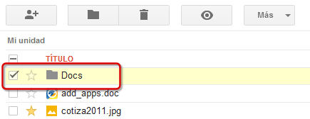
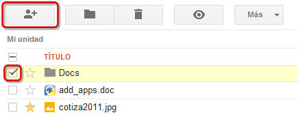
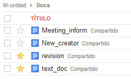

A continuación veremos las posibilidades que nos ofrece Drive para compartir carpetas con otros usuarios:
Puede que en determinadas ocasiones necesitemos compartir varios archivos con las mismas personas. En lugar de compartir cada archivo de forma individual, podemos moverlos dentro de una carpeta y compartirla. Todos los archivos que contenga mantendrán la misma configuración y permisos.

Para comenzar a compartir, seleccionaremos la carpeta en cuestión y haremos clic sobre el icono “Compartir”.

Veremos que aparece el cuadro de diálogo "configuración para compartir". Podremos compartir carpetas de la misma forma que compartimos archivos. Editaremos los permisos y la visibilidad de nuestra carpeta.
Posteriormente, podríamos modificar los permisos de algún archivo concreto si necesitamos que tenga una configuración diferente al resto.
Las opciones de configuración que especifiquemos a la carpeta se aplicarán a todos los documentos que la carpeta contenga. Esto nos ahorra mucho tiempo y puede resultarnos muy práctico ya que no tendremos que configurar las opciones de cada archivo por separado.

Si posteriormente incorporamos archivos a esta carpeta, los nuevos archivos también se compartirán con la misma configuración del resto de archivos de la carpeta.